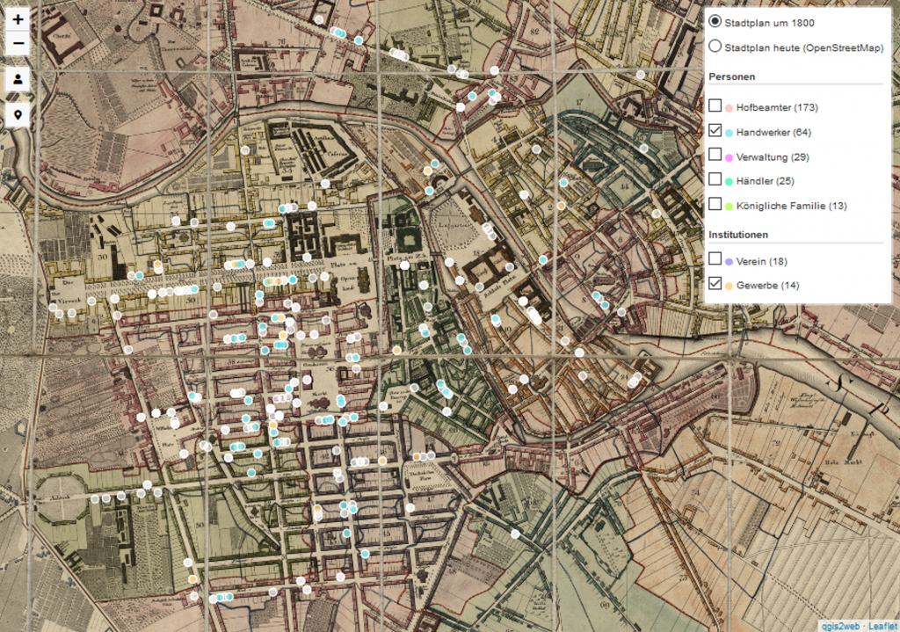

Vom 27. Mai bis zum 09. August 2019 absolvierte ich bei TELOTA an der BBAW ein Vollzeitpraktikum.
Aus der Konferenz "Digital Humanities im deutschsprachigen Raum" (
DHd 2019, siehe auch zugehöriger
Konferenzbericht) ergab sich für mich ein Praktikum, welches sich praktischerweise gut in das halbe Jahr Pause zwischen dem Abschluss meines Bachelorstudiums (Bibliotheksmanagement, B.A.) an der FH Potsdam und dem Beginn des Masterstudiums (Information Science, M.A.) an der HU Berlin einbauen ließ. In diesem Beitrag möchte ich unter anderem über meine Aufgabenbereiche und Lernerfolge in dem genannten Praktikum berichten.
Die Einrichtung
Die Berlin-Brandenburgische Akademie der Wissenschaften (BBAW)
ist eine Fach- und Ländergrenzen überschreitende Vereinigung herausragender Wissenschaftlerinnen und Wissenschaftler mit über 300-jähriger Tradition. [...] Als größte außeruniversitäre geisteswissenschaftliche Forschungseinrichtung in der Region Berlin-Brandenburg sichert und erschließt sie kulturelles Erbe. (bbaw.de)
TELOTA (The Electronic Life Of The Academy)
ist die Digitalisierungsinitiative der Berlin-Brandenburgischen Akademie der Wissenschaften. Ihre Aufgabe ist es, Werkzeuge zu entwickeln, mit denen die Forschungsergebnisse der Akademie digital erarbeitet, dokumentiert und präsentiert werden können. (bbaw.de/telota/ueber_uns)
Aufgaben
Während meiner Praktikumszeit arbeitete ich primär bei dem
Vorhaben zur Preußischen Monarchie↓ und dem
Projekt correspSearch ↓ mit. In den ersten Tagen des Praktikums erhielt ich jedoch zunächst die Möglichkeit, mein Wissen bezüglich der bevorstehenden Aufgaben zu vertiefen sowie mir neues Wissen anzueignen. Mit den mir zu Verfügung gestellten Materialien und Tipps zu verschiedenen Ressourcen aktualisierte ich meine XML/XSLT-Kenntnisse. Zusätzlich lernte ich mit einem Online-Kurs zur Programmiersprache Python erste Grundlagen des Programmierens kennen und arbeitete ich mich eigenständig in eine mir bislang nur sehr flüchtig bekannte Programmiersprache ein
.
Preußische Monarchie
Das Vorhaben "Anpassungsstrategien der späten mitteleuropäischen Monarchie am preußischen Beispiel 1786 bis 1918" untersucht
die Entwicklung der Monarchie am preußischen Beispiel im 19. Jahrhundert in europäischer und globaler Perspektive [...]. (bbaw.de/forschung/preussen)
Eine meiner Aufgaben bestand darin, bestehende Organigramme (welche der Beschreibung und Visualisierung Preußischer Hofstrukturen dienen sollten) aus einem statischen Format in ein XML/TEI-Format zu überführen, sodass diese in die Webseite des Vorhabens eingebunden und dynamisch durchsucht, erweitert oder z. B. an anderer Stelle erneut integriert werden können. Zudem arbeitete ich an einer XSLT-Datei, welche einige der hierfür benötigten Transformationsschritte automatisiert durchführt.

Anschließend beschäftigte ich mich mit der Darstellung geografischer Daten in einem Geoinformationssystem (GIS) und der Sichtbar- und Zugänglichmachung dieser Daten über eine entsprechende Webanwendung. Für die Unterseite der Wohntopographie des Akademievorhabens sollte eine interaktive Karte mit einer integrierten Suche für Personen und Institutionen sowie Filtern für Berufskategorien und Arten von Institutionen entstehen. Hierfür arbeitete ich mich zunächst in das Programm QGIS ein und versuchte, ein Verständnis über das Vorgehen bei der Datenaufnahme, die bereits erhobenen Daten sowie mögliche Anknüpfungspunkte zu gewinnen. Hier wurde mir schnell die Relevanz eines umfassenden Konzepts, welches bereits die Erfassung der Daten betrifft, klar. Im Hinblick auf die zukünftige Erstellung ähnlicher Karten für weitere Stichjahre der Wohntopographie stellte ich entsprechende Überlegungen an und hielt diese in Form einer Dokumentation fest. Die Karte, die schlussendlich auf der Webseite zu sehen ist, basiert auf der Open Source JavaScript-Library
Leaflet. Neben Leaflet musste ich mich für bestimmte Fragestellungen auch in das zugrundeliegende Datenformat geoJSON sowie in JavaScript einarbeiten. Mithilfe des
qgis2web-Plugins erzeugte ich eine erste Web-Karte, welche dann von mir nach den Vorgaben des Vorhabens entsprechend angepasst wurde. Das Ergebnis soll zukünftig auf der
Webseite zur Preußischen Monarchie einsehbar sein (die Beta-Phase geht voraussichtlich Ende Oktober online)
. ↑
CorrespSearch
The web service correspSearch is based on digital letter indexes that are available online and written in the Correspondence Metadata Interchange (CMI) Format. (correspsearch.net)
In einem zweiten Praktikumsprojekt beschäftigte ich mich mit der automatisierten Extraktion von Briefmetadaten aus einer gedruckten Edition. Ich arbeitete mich in das Projekt correspSearch und das zugrundeliegende Datenformat Correspondence Metadata Interchange Format (CMIF) ein und entwickelte ein Verständnis für die wesentlichen Schritte bei der automatisierten Erfassung von Metadaten. Nach dem Einscannen und der Texterkennung von Inhaltsverzeichnissen einiger Bände aus den Werken Georg Forsters erstellte ich Python-Skripte für die Transformation der rohen Texte in entsprechende CSV-Dateien sowie die Umwandlung der Datumsangabe in ein standardisiertes Datumsformat (ISO). Obwohl letzteres bereits zuvor deutlich umfassender umgesetzt wurde (siehe Webservices
"Dates" des
Personendaten-Repositoriums), ermöglichte mir dieses Vorgehen zum einen, ein Verständnis für die Komplexität solcher Anwendungen zu entwickeln, und zum anderen, ein ähnliches kleines Programm in seiner Grundfunktion selbst zu schreiben. Zusätzlich nutzte ich ein
Python-Skript für die Transformation von CSV Dateien in das CMI-Format nach und verwendete
Open Refine, um die OCR-Ergebnisse auf ihre Richtigkeit zu prüfen. Auch erkannte ich hierbei die Relevanz einer Struktuierung und Vereinfachung des Workflows.
↑
Lernerfolg und Einschätzung
Generell würde ich meinen Lernerfolg als sehr hoch einschätzen. Mein theoretisches Grundlagenwissen im Bereich XML konnte ich durch die Praxisprojekte deutlich vertiefen. Zudem erlangte ich viel neues Wissen, beispielsweise in einigen Grundlagen des Programmierens, aber auch in Bezug auf eher praktische Aspekte wie digitale Arbeitsweisen, Tools und Methoden. Gerade die (Mit-)Arbeit an Projekten gefiel mir besonders gut. Hierdurch erhält man nicht nur fassbare Ergebnisse, sondern auch eine reale Arbeits- und Fehlersituation. Der Lerneffekt und die Entwicklung von Strategien zur Problemlösung waren dabei besonders hoch.
In meinem Praktikum habe ich mich stets sehr willkommen gefühlt und konnte mich (trotz einiger anfänglicher Unsicherheiten in Bezug auf meine eigenen Programmierkenntnisse) schnell einleben. Sehr positiv empfand ich, dass noch vor Beginn des Praktikums nach meinen Interessen gefragt wurde und diese auch in der darauffolgenden Planung des Praktikumsablaufs berücksichtigt wurden. Die AnsprechpartnerInnen nahmen sich immer Zeit für Fragen und Probleme. Gerade hier fiel mir auf, dass ich häufig von verschiedenen MitarbeiterInnen mit hilfreichen Tipps sowie Hinweisen auf Software und Werkzeuge versorgt wurde. Auch anderweitig wurde ich sehr gut in das Team eingebunden und konnte an verschiedenen Sitzungen und Veranstaltungen teilnehmen. Der Praktikumsplan gab mir eine grobe Struktur vor und dennoch konnte ich flexibel und selbstständig an den mir gestellten Aufgaben arbeiten.
Ein Praktikum bei TELOTA kann ich nur empfehlen, insbesondere für Studierende aus den Bereichen Digital Humanities, Informatik und Informationswissenschaft. Wer sich z.B. für Themen rund um die digitale Publikation geisteswissenschaftlicher Inhalte und/oder für die Entwicklung von Forschungssoftware begeistert, ist meiner Meinung nach hier genau richtig. Falls ich jetzt bei jemandem Interesse an einem solchen Praktikum geweckt habe, könnt ihr mich gerne kontaktieren, ich leite das dann gerne weiter.